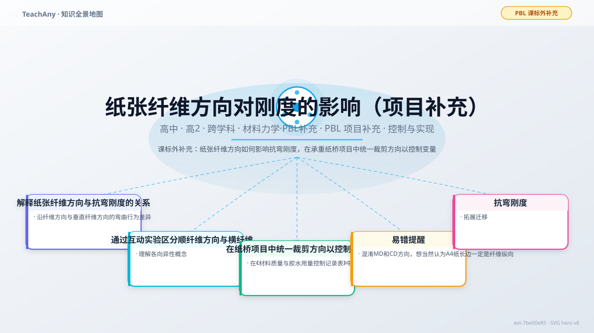
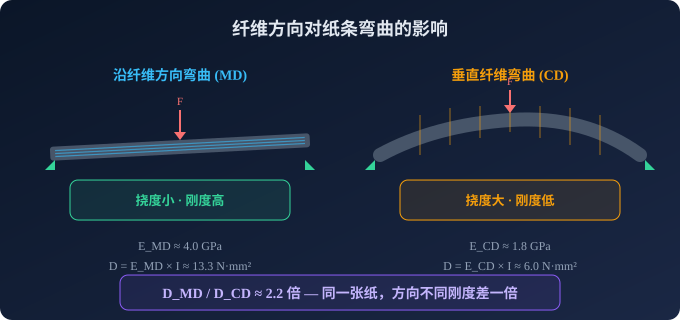
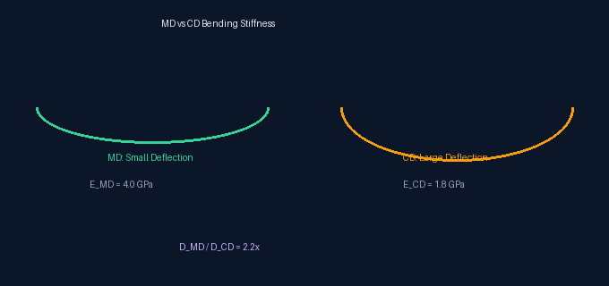
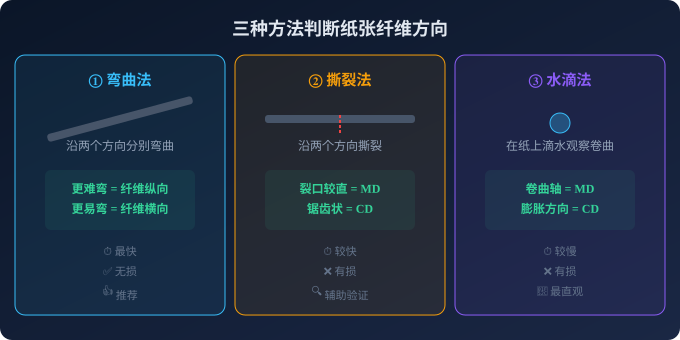
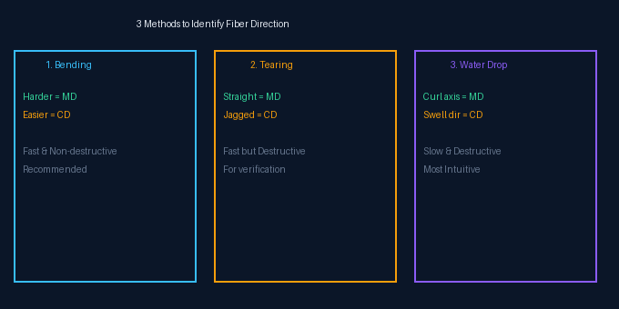

Gallery
v1.0.0 · skill v7.18.0
同样一张纸，顺着纤维折和横着纤维折，手感为何截然不同？这个差异会怎样影响你的纸桥实验数据？

选一个你关心的问题，后面的内容会围绕它展开。
选择或输入后，本课会围绕你的问题展开。
项目对接：本节服务于「控制与实现」阶段——制作纸桥模型时需统一裁剪方向，确保所有模型用纸的纤维方向一致，避免刚度差异干扰结构对比。
不用怕答错——这只是一个起点检测，帮你看清自己已经知道什么。
1. 一张 A4 打印纸，沿着长边方向和短边方向分别弯曲，哪个方向更容易弯？
2. 做纸桥实验时，如果两组纸条裁剪方向不同，比较它们的承载力数据还公平吗？
造纸过程中，纸浆在造纸机上高速运动，纤维素分子链倾向于沿运动方向（纵向，Machine Direction, MD）排列。这导致纸张在 MD 和 CD（Cross Direction，横向）两个方向上力学性能不同。
沿纤维方向弯曲时，弹性模量 E 更大，纤维提供更强的抗弯能力；垂直纤维方向弯曲时，主要依赖纤维间的氢键结合力，E 值显著降低。


各向异性（Anisotropy）：材料在不同方向上表现出不同的物理性质。纸张就是典型的各向异性材料。
拖动滑块改变纤维方向角度，观察同一根纸条在不同纤维排列下的弯曲程度。施力点固定在中点，力的大小不变。
💡 0° = 纤维沿梁纵向排列（最刚），90° = 纤维垂直于梁纵向（最柔）。注意观察挠度的变化幅度。
弹簧的刚度 k 就像纸条的弹性模量 E——k 越大，同样力下变形越小。拖动不同质量的重物到弹簧上，观察弹簧的变形量，类比理解纤维方向对纸条刚度的影响。
💡 拖动重物挂到弹簧上，对比不同弹簧的软硬——弹簧越硬（k 越大），变形越小，类比纸条纤维方向对刚度的影响。
在纸桥项目的「控制与实现」阶段，你需要确保所有模型的用纸在纤维方向上保持一致，否则承载力的差异可能来自材料而非结构——你的对比实验就失去了意义。
❌ 错误做法
P1 用纵向裁剪纸条，P2 用横向裁剪纸条，P3 混用方向——三种结构的承载力对比毫无意义。
✅ 正确做法
所有纸条统一沿纵向（MD方向）裁剪，在《材料质量与胶水用量控制记录表》中标注纤维方向，确保变量可控。


项目产出：在《材料质量与胶水用量控制记录表》中增加一列「纤维方向」，记录每张纸的裁剪方向（MD/CD），确保所有模型用纸方向一致。
📋 题目
纸桥项目中，你制作三角桁架构件（P1）。经弯曲法测试，A4 纸沿长边方向更难弯曲（MD = 长边方向）。你沿长边裁出 4cm 宽纸条制作桁架杆件。同组的同学沿短边裁出同样 4cm 宽的纸条。两人用同样胶水、同样叠层数。
问：谁的桁架杆件抗弯刚度更高？加载测试中能否直接对比？
✅ 解题
第一步：判断纤维方向 — 弯曲法已确认 MD 沿长边。你沿长边裁 → 杆件纵向 = MD；同学沿短边裁 → 杆件纵向 = CD。
第二步：比较刚度 — EMD > ECD（纤维纵向弹性模量更高），截面惯性矩 I 相同（同为 4cm 宽纸条），因此 D你 = EMD·I > ECD·I = D同学。你的杆件更刚硬。
第三步：能否对比？ — 不能。承载力差异可能来自纤维方向（材料变量）而非结构形式（桁架 vs 拱 vs 蜂窝）。控制变量原则要求统一裁剪方向。
💡 关键
控制变量实验中，裁剪方向和结构形式是两个独立变量。只有统一裁剪方向，才能公平比较不同结构的承载力。
📋 习题
已知某 A4 纸纤维纵向弹性模量 EMD ≈ 4.0 GPa，横向弹性模量 ECD ≈ 1.8 GPa。裁出宽 4cm 的纸条，厚度 t = 0.1mm。分别计算沿 MD 和 CD 方向弯曲时的抗弯刚度 D（N·mm）。
📝 解题过程
矩形截面惯性矩：I = b·t³/12
其中 b = 40mm，t = 0.1mm
I = 40 × 0.1³ / 12 = 40 × 0.001 / 12 ≈ 0.00333 mm⁴
沿 MD 弯曲：
DMD = EMD × I = 4000 MPa × 0.00333 mm⁴ ≈ 13.3 N·mm²
沿 CD 弯曲：
DCD = ECD × I = 1800 MPa × 0.00333 mm⁴ ≈ 6.0 N·mm²
比值：DMD / DCD ≈ 2.2
🎯 结论
同一张纸，沿 MD 方向的抗弯刚度是 CD 方向的约 2.2 倍。这就是为什么在纸桥项目中，裁剪方向的选择会显著影响实验结果——如果不统一，材料本身带来的刚度差异可能超过结构形式的影响。
1. 一张 A4 纸沿长边方向对折后立在桌面上，与沿短边方向对折后立在桌面上，哪个更不容易倒塌？
2. 在纸桥项目中，你用弯曲法测试纸条后确认 A 方向更难弯。裁剪纸桥构件时应沿哪个方向裁？
3. 以下哪种说法正确描述了纸张的各向异性？
⚠️ 易错点提醒
回到项目主线的下一步
现在你已掌握纤维方向对刚度的影响，可以回到「控制与实现」阶段：
学完本节后，你在项目中能完成：识别并标注每张纸的纤维方向，确保所有纸条沿同一方向裁剪，在《材料质量与胶水用量控制记录表》中记录纤维方向信息，使纸桥承载力对比实验公平可靠。
本节点的前置、后续和同域知识。